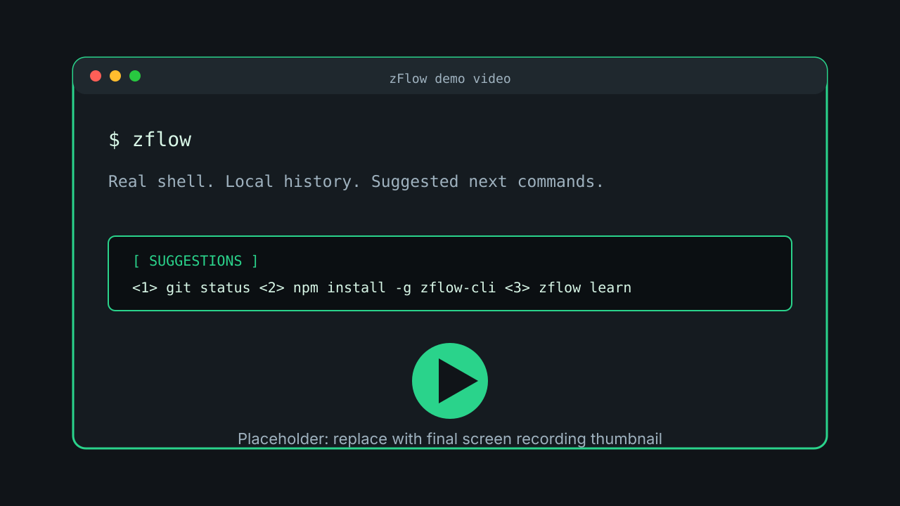

Real shell wrapper
Keep your existing bash or zsh behavior, including directory changes and interactive commands.
Local-first terminal assistance
zFlow runs bash or zsh inside a focused TUI, learns from local command history, and helps you recall the next command without replacing your terminal habits.
$ zflow
running your real zsh session...
$ git
<1> git status
<2> git pull --rebase
<3> git log --oneline -5
Select a candidate to fill the input. Execute only when you decide.
Demo video
This slot is wired for the launch video. Until the final recording is available, it uses a placeholder thumbnail and links to the recording script.

Features
Keep your existing bash or zsh behavior, including directory changes and interactive commands.
Import shell history and build a recommendation index on your machine.
Suggestions fill the input by default, so execution stays under your control.
Surface relevant commands from previous workflows, even when they were used elsewhere.
Use local history to compare recommendation strategies with top-k and MRR metrics.
Tune retrieval, adaptive feedback, and Enter behavior from a local config file.
Workflow
zFlow is intentionally small. Install it, launch the TUI, let it learn from local shell history, and evaluate whether the recommendations improve your own workflow.
npm install -g zflow-cli
zflow
zflow learn
zflow eval
Privacy
zFlow reads local shell history to generate suggestions and stores learning data under
~/.config/zflow/. Command history and recommendation indexes are not uploaded
by default.
Install
npm install -g zflow-cli
zflow --version
zflow
For a temporary run, use npx zflow-cli. The main npm package selects the
appropriate macOS binary package automatically.